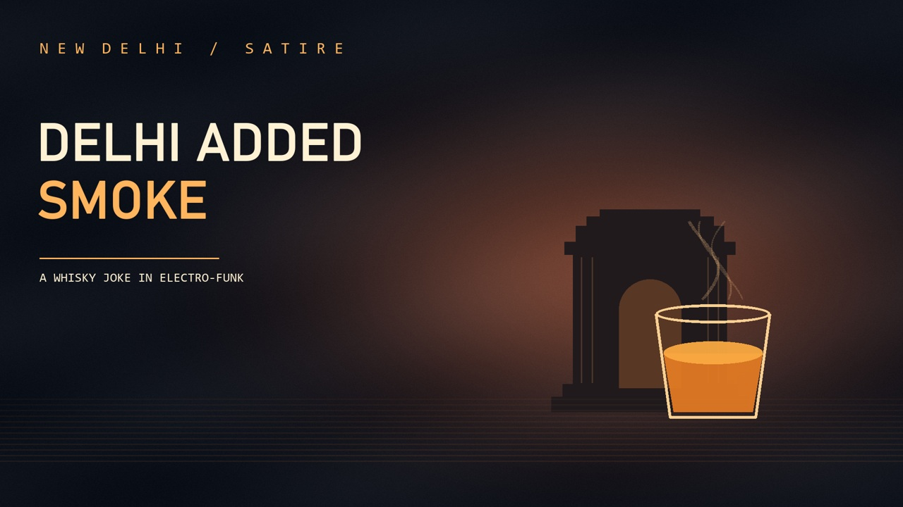

ELECTRO-FUNK SATIRE
Peat by Pollution
A sip at India Gate turns into an unexpected whisky tasting. Delhi smog gives a Speyside single malt an Islay finish.
Watch on YouTube
ELECTRO-FUNK SATIRE
A sip at India Gate turns into an unexpected whisky tasting. Delhi smog gives a Speyside single malt an Islay finish.
Watch on YouTube